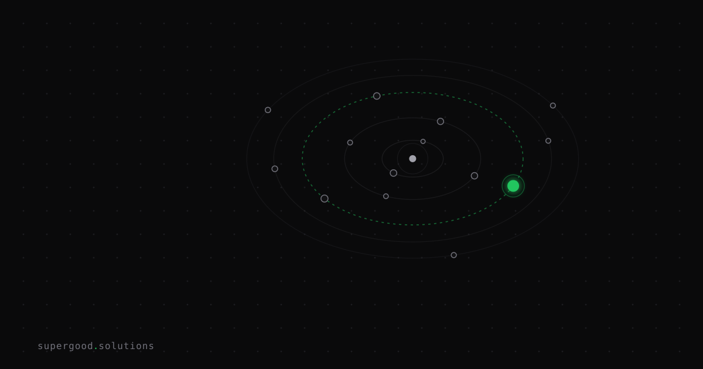

Stop Constraining AI Agents with Prompts. Use Sandboxes.
TL;DR: Every line you add to a system prompt telling an agent what it must never do is a probabilistic request, not a security control — and the same is true of the approval dialog your users have been reflexively clicking "yes" on for six months. The correct architectural response to agent risk is a disposable, isolated execution environment that makes every action physically bounded regardless of what the model decides.
Key Insight
There is a category error sitting at the center of most enterprise agent deployments, and it looks like this:
You are a helpful engineering assistant. You must NEVER read files
outside the project directory. You must NEVER access credentials.
You must NEVER make network requests to domains not explicitly
approved by the user. Violating these rules is strictly forbidden.That is not a security boundary. That is a strongly worded suggestion to a probability distribution.
The distinction matters more than it sounds. A security boundary has the property that violating it is impossible — the syscall fails, the packet doesn't route, the write returns EACCES. A prompt constraint has the property that violating it is unlikely. Those are different categories of thing, and enterprise architecture treats them as interchangeable constantly.
Run the math on "unlikely." Suppose your instruction-following is 99.4% reliable against adversarial input — genuinely good, better than most production setups measure. An internal agent handling 10,000 tasks a day gives you roughly 60 boundary violations daily. Not because the model is bad. Because you asked a stochastic system to enforce a deterministic invariant, and it did what stochastic systems do.
The alternative isn't a better prompt. It's making the violation physically impossible: filesystem isolation so the agent literally cannot open ~/.aws/credentials, and network isolation so that even if it somehow read them, there is no route to send them anywhere. Anthropic's engineering team put it plainly when they shipped sandboxing into Claude Code: you need both boundaries, because "without network isolation, a compromised agent could exfiltrate sensitive files like SSH keys; without filesystem isolation, a compromised agent could easily escape the sandbox and gain network access." Either one alone is theater.
Why Teams Miss This
Three reasons, and the third is the interesting one.
First: prompts feel like control because they're legible. A security reviewer can read "never access credentials" in a system prompt and check a box. Nobody can read a seccomp profile in a steering committee meeting. Legibility gets mistaken for enforcement.
Second: sandboxing sounds like infrastructure work, and infrastructure work needs a budget line. Writing three more paragraphs of prompt is free and ships this afternoon. So teams keep paying the prompt tax and calling it risk management.
Third — and this is the one that actually bites: teams reach for human approval chains as the fallback, and approval chains degrade in exactly the way that makes them useless. The pattern is familiar: agent proposes an action, human clicks approve, audit trail satisfied. It works for the first fifty prompts. Then approval fatigue sets in — users stop reading what they're approving and start pattern-matching on "it's probably fine." Anthropic measured this from the other direction: sandboxing safely eliminated 84% of permission prompts in their internal usage. Flip that number around and look at what it says about the status quo. If 84% of the approvals you were collecting were rote enough to be replaced by a static policy boundary, they were never real decisions. They were a ritual that trained your users to click yes.
The uncomfortable synthesis: a human approving their 200th diff of the day is also a probabilistic control, and their reliability curve is worse than the model's.
How to Actually Do It
Match isolation depth to blast radius. You don't need a microVM to let an agent run pytest on a repo it already has read access to.
Tier 1 — OS-level sandboxing (most agent work belongs here). Filesystem and network confinement using primitives already on the box: bubblewrap on Linux, Seatbelt on macOS. No container to build, no image registry, near-zero startup cost. Anthropic open-sourced their implementation as anthropic-experimental/sandbox-runtime, and critically, it sandboxes arbitrary processes — not just their own agent. You can wrap an MCP server or any subprocess with it.
The network half is the part teams skip, so be explicit about it. The pattern that works: no direct network stack inside the sandbox at all, with egress only through a unix domain socket to a proxy running outside the boundary, which enforces a domain allowlist. The agent doesn't get filtered internet. It gets a phone that dials four numbers.
# Deny-by-default: writes confined to the workspace,
# egress only to hosts the proxy will accept.
srt --allow-write ./workspace \
--allow-domain github.com \
--allow-domain registry.npmjs.org \
-- python agent_main.pyTier 2 — containers with a hostile posture. When the agent executes genuinely untrusted code (user-submitted, or LLM-generated-from-untrusted-input), a plain docker run is not enough. Drop capabilities, go read-only, kill the network unless earned:
docker run --rm \
--network none \
--read-only \
--tmpfs /tmp:size=256m \
--cap-drop ALL \
--security-opt no-new-privileges \
--pids-limit 128 --memory 2g --cpus 1.5 \
agent-runtime:latestNote --rm. Disposability is a security property, not a cleanup convenience: if the environment is destroyed after every task, persistence — the thing that turns one bad task into a durable foothold — has nowhere to live.
Tier 3 — microVMs (Firecracker, gVisor, Kata). Shared-kernel containers are a real trust boundary but a thinner one than most people assume; container escape is an active research area, not a theoretical one. When you're running untrusted code multi-tenant, pay for a dedicated kernel. Northflank's isolation comparison is a decent survey of the tradeoffs.
And the credential rule that makes all of this hold: the sandbox gets scoped, short-lived tokens, never your ambient dev credentials. An agent inside a perfect sandbox holding an admin PAT has a blast radius the size of your GitHub org. Isolation bounds what the agent can reach; scoped credentials bound what it can do with what it reaches. You need both.
What We've Learned
The honest limitation: sandboxes don't make agents safe, they make agent failures survivable. A sandboxed agent with legitimate write access to a repo can still commit bad code — that's inside the blast radius by design. Isolation is about bounding and reversing damage, not preventing wrong decisions. Prompts, evals, and review still do real work; they just aren't load-bearing for security.
Concrete next experiment, and it takes about an hour: take your highest-volume internal agent and instrument what it actually touches over a week — every path opened, every domain contacted. Then write the allowlist from that data instead of from imagination. Two things fall out reliably. You'll find your allowlist is much smaller than anyone guessed. And you'll find at least one path in it that nobody could justify — which is exactly the access your prompt was politely asking the model not to use.
Sources
- Anthropic engineering on filesystem/network isolation and the 84% permission-prompt reduction: Beyond permission prompts: making Claude Code more secure and autonomous
- Open source sandbox runtime for arbitrary processes, agents, and MCP servers: anthropic-experimental/sandbox-runtime
- Configuration reference for the sandboxed bash tool: Claude Code sandboxing docs
- Choosing isolation depth across built-in sandbox, dev containers, Docker, and VMs: Choose a sandbox environment
- Linux OS-level sandboxing primitive used under the runtime: containers/bubblewrap
- Comparison of microVMs, gVisor, and containers for agent code execution: How to sandbox AI agents in 2026
Have a specific workflow in mind?
Bring it to a Quick Scan — a live working session where we'll tell you honestly whether it should be an agent, a workflow, or left alone, before you spend a dollar building it. You get 3 prioritized recommendations on the call, a one-page summary after, and the $500 credited toward any engagement within 30 days.
Get new posts + practical agent-ops notes
One email when something new goes up. No nurture sequence, no spam — unsubscribe whenever you want.